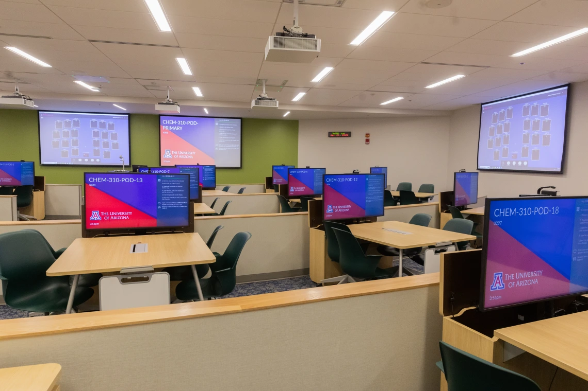
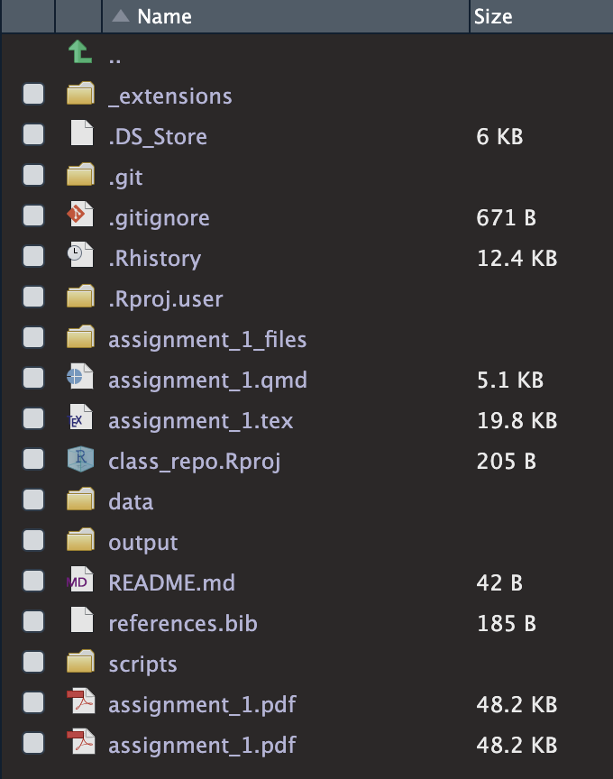

Your computer cannot be a mess.
To efficiently work with data, you want to organize your computer in a certain way. Organizing your folders and files in that certain way will make things much more manageable.
The same goes for version control. To efficiently work with version control applications (do not panic if you ignore what version control is—We will talk about it soon), you want to organize your computer in a certain way.
A model working directory
During your doctoral studies you will crunch numbers on a daily basis. In the SGPP, we typically program in R, a programming language for data analysis.
R users are familiar with the concept of working directory. Indeed, there is a function that prints the working directory, getwd().
The working directory is a folder.
More specifically, the working directory is the folder where you must keep all the files (e.g., that CSV file with survey data you have to analyze) and scripts (text files where you write and save your code) relevant to the project in question.
Therefore, if you execute the getwd() function in the R console, R would print the path to the working directory, say, /Users/edwinalvarado/Documents/r_projects/unofficial_primer.
So, when it comes to folders and files organization, I suggest creating two folders in your computer, namely, r_projects and github_projects.
You could locate both folders in Documents. In my case, the two paths look like this:
/Users/edwinalvarado/Documents/r_projects.
/Users/edwinalvarado/Documents/github_projects.
You should gather in r_projects those R projects that you want to keep in your computer only. If you want to track changes using a version control tool like GitHub, the R project in question should go to github_projects.
Let us focus on the r_projects folder.
In r_projects, you want to have one specific folder (i.e., a working directory!) for each course, paper, or practice you are working on.
To create the working directory for, say, POL 601, you follow these steps:
Open RStudio.
Click on File > New Project, which will open a new window.
Select New Directory.
Choose an appropriate Directory name (use underscores instead of whitespaces), say, pol_601 or pol601.
Click on Browse and make sure to Create project as subdirectory of the r_projects folder.
Click on Create Project.
After following the steps above, you will have created a new folder in r_projects.
In my case, the folder’s path would be like /Users/edwinalvarado/Documents/r_projects/pol601. If I access the folder, I will see a file named pol601.Rproj, which is an RStudio project.
The next time I have to program something related to POL 601, I just click on the RStudio project, pol601.Rproj, which will open RStudio.
Most importantly, RStudio will open the working directory corresponding to POL 601, so I do not need to worry about setting the working directory manually.
OK. You repeat these steps for each course, paper, or practice that comes along the way. At some point, you will have numerous working directories:
/Users/edwinalvarado/Documents/r_projects/pol601.
/Users/edwinalvarado/Documents/r_projects/pol602.
/Users/edwinalvarado/Documents/r_projects/pol603.
/Users/edwinalvarado/Documents/r_projects/second_year_paper.
/Users/edwinalvarado/Documents/r_projects/comps.
/Users/edwinalvarado/Documents/r_projects/prospectus.
And so on…
To sum up, we have learned that R users organize their work around RStudio projects. We have learned how to create RStudio projects. And we have learned that creating an RStudio project results in a new working directory (i.e., a new folder) that we locate in the r_projects folders.
The new working directory must have a certain structure. I recommend to create three sub-folders:
r_projects/pol601/data, where you store the data of interest.
r_projects/pol601/scripts, where you store the text files with the code that loads, wrangles, tidies, models, or visualizes the data.
r_projects/pol601/output, where you store wrangled data, model output (modeling data might be time-consuming, so you do not want to re-run models), or visualizations.
If you create a Quarto document (I have a post about it), I suggest keeping it right in the working directory, not in sub-folders.
I shared a model working directory through GitHub. It looks like this:

It is sensible to avoid deleting files. You never know if that trashy script will be useful in the future. Instead, you can create an old folder at any folder and place the old stuff there.
GitHub integration
Often, you want your R projects to be GitHub repositories.
GitHub is a version control tool. Moreover, GitHub is a platform to share code with instructors, co-authors, and colleagues.
To keep all your GitHub repositories together, you must create a folder locally on your computer, github_projects.
Of course, the first step is to create a GitHub account. The second step is to download GitHub Desktop.1
1 I suggest that you get used to running GitHub commands from the Terminal in RStudio. Using the Terminal approximates better the real-world jobs in the data science industry.
The steps go as follows:
Log in to the GitHub website.
Click on your profile picture (upper right corner).
Click on Your repositories.
Click on New (green bottom) to create a new repository.
Choose an appropriate name (say, pol601) and make sure that the repository is private.
Click on Create repository, which will lead you to the main page of the new repository.
Click on Code (green bottom).
Click on Local.
Click on Open with GitHub Desktop, which will lead you to GitHub Desktop.
In GitHub Desktop, click on Browse and make sure that the repository will be located in the github_projects folder.
Having reached this point, the repository should exist locally on your computer and, more specifically, in the github_projects folder.
Now it is time to populate github_projects/pol601.
Open RStudio.
Click on File > New Project, which will open a new window.
Select Existing Directory (instead of New Directory, as we did it in the previous section).
Click on Browse and make sure to choose the github_projects/pol601 folder.
Click on Create Project.
Thus, you will have created a new folder in github_projects that is both an RStudio project and a GitHub repository.
You are all set to program great things and exploit the benefits of version control!